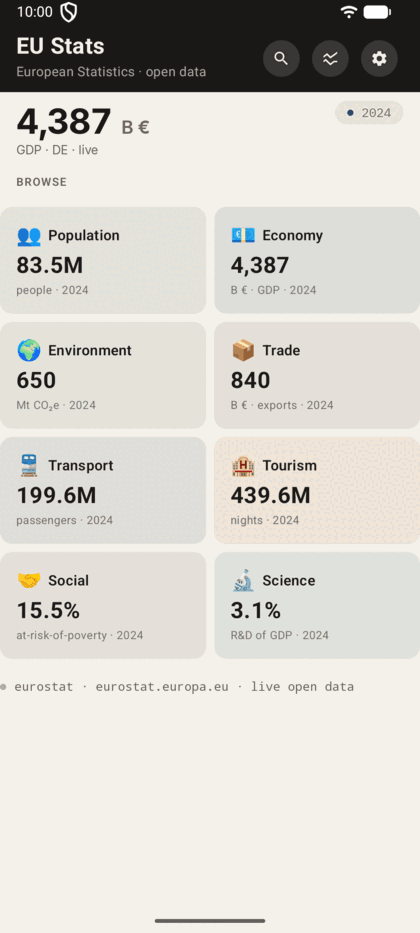
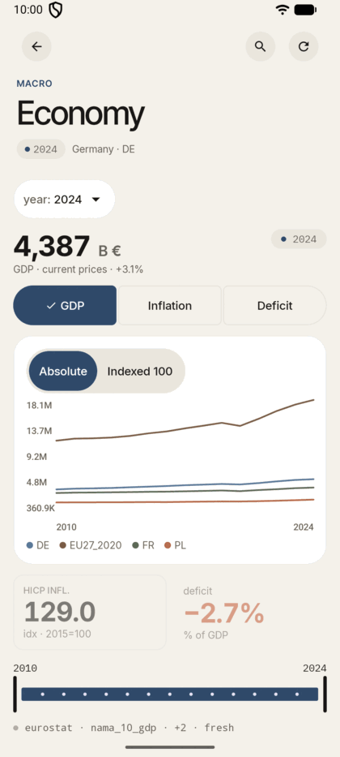
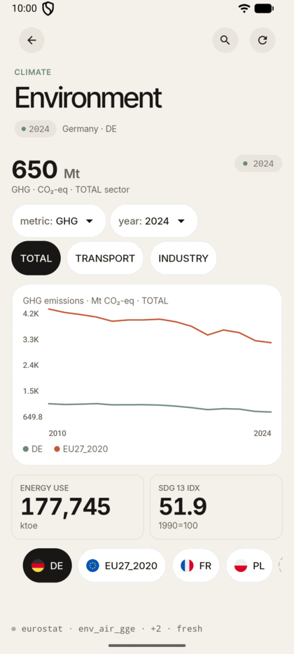
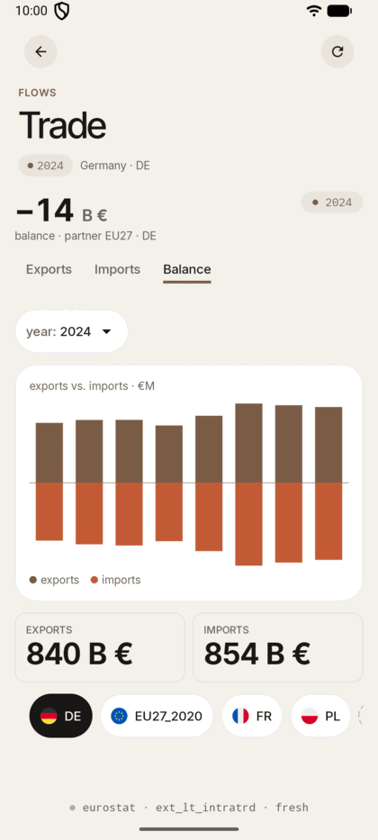
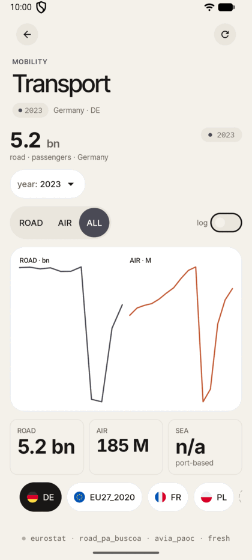
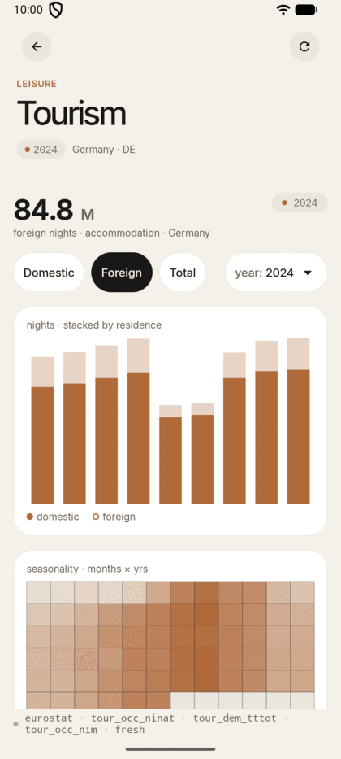
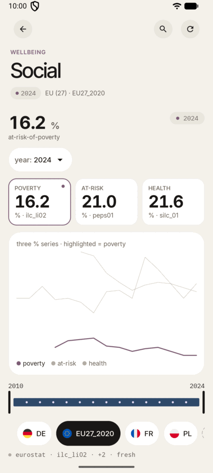
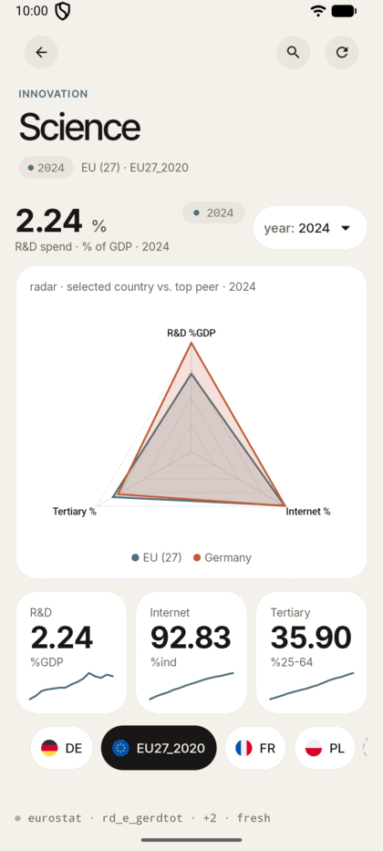
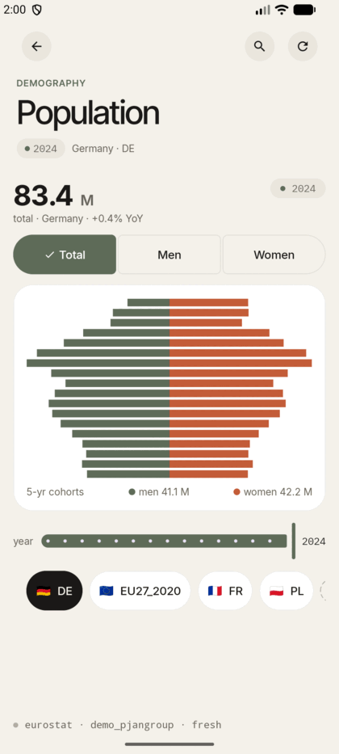

Real public-API data
All eight modules ship live data from the official Eurostat dissemination API — 19 datasets in total. No hardcoded mocks; no demo databases.
An open-source mobile and desktop client for the public Eurostat API. Eight thematic modules — economy, population, environment, trade, transport, tourism, social, science — plus cross-country comparison and indicator search, all on a single Kotlin Multiplatform codebase.
Independent third-party open-source client. Not affiliated with Eurostat or the European Commission.

Calm, editorial UI. Stale-while-revalidate caching. Real API calls, no mocks. Designed for citizens, journalists, and students who want to explore European statistics without depending on any single vendor.
All eight modules ship live data from the official Eurostat dissemination API — 19 datasets in total. No hardcoded mocks; no demo databases.
SQLDelight cache with a 12-hour TTL. Cached data renders instantly, network refresh happens behind a calm stale banner, and offline never means a blank screen.
Eight chart types — line, stacked-bar, pyramid, heatmap, diverging-bar, radar, small-multiples, multi-line-highlighted — drawn on a Compose Canvas with zero third-party rendering dependencies.
English, Polish and Ukrainian across every screen — and the Settings picker switches the whole UI at runtime, no restart needed. This site itself ships in nine languages.
On tablets and desktop, every one of the eight screens switches to a two-pane layout — a 320 dp controls pane beside the content — while phones keep the exact single-column ordering.
Tapping near any point on a line chart opens a detail sheet with the country, year, formatted value, unit and dataset code — even in Indexed-100 mode it resolves the true absolute value.
The two newest screens turn eight separate modules into one connected statistical atlas.
Pick one of eight headline indicators — population, GDP, emissions, exports, air passengers, tourism nights, poverty risk, R&D intensity — and overlay up to five countries. Colours stay stable in selection order, and the Absolute / Indexed-100 toggle rebases every series to a common starting point: the honest way to compare economies of different sizes.
A compiled-in index of every indicator across all eight modules — labels, dataset codes, keywords — with tiered ranking. Type “poverty”, “R&D” or “emissions” and jump straight to the right screen; a blank query browses the catalogue module by module.
Each module owns a dataset, a switcher pattern, and a signature chart that fits the shape of the data. Descriptions are pulled verbatim from the project README.
A demographic pyramid for 18 age cohorts (five-year bands, Y_LT5 through Y_GE85). The headline shows total population with year-over-year change. A three-option segmented control (Total / Men / Women) dims the opposite side of the pyramid when a single sex is selected. A year slider scrubs through available years; a country chips row switches the active country without re-fetching.

Three macro indicators — GDP in current prices (billion EUR), HICP inflation index (2015 = 100), and government net lending/borrowing as % of GDP — displayed as a multi-country line chart. A segmented control switches the active metric; the two inactive metrics remain visible as dimmed secondary stat tiles. A dual-handle year scrubber trims the chart's x-range; a separate year dropdown picks the year used by the headline.

Three climate datasets selectable via a dropdown: greenhouse gas emissions in Mt CO₂-eq, final energy consumption in ktoe, and the SDG 13 climate index at 1990 = 100. When GHG or Energy is active, a chip row filters by sector (TOTAL / TRANSPORT / INDUSTRY). The hero is a line chart comparing the active country against one peer; two stat tiles show the other two metrics for the same year.

Intra-EU goods trade flows — exports, imports, and trade balance in billion EUR. The hero is a diverging bar chart spanning the eight most recent years, with exports extending to the right and imports to the left. Three underline tabs (Exports / Imports / Balance) highlight the relevant direction. Two compact stat tiles show the active country's figures for the selected year.

Road and air passenger volumes presented as small-multiple line charts side by side. Road data (billion passengers) and air data (million passengers) are independently scaled per panel. A pill toggle (ROAD / AIR / ALL) controls which panels are visible. A log-scale switch compresses the axis for countries with very different magnitudes. Three stat tiles summarise road, air, and a "sea: n/a" tile that honestly explains the port-keyed dataset is intentionally excluded.

Accommodation overnight stays — domestic, foreign, and total nights — rendered as a stacked bar chart covering the nine most recent years. A chip row controls which metric drives the headline figure. Below the stacked bars, a monthly seasonality heatmap (cells = month × year) shows the distribution of nights through the calendar.

Three welfare percentage indicators drawn from EU-SILC surveys: at-risk-of-poverty rate, at-risk-of-poverty-or-social-exclusion rate, and the share of population reporting very-good self-perceived health. All three are plotted together as a multi-line highlighted chart; tapping a KPI tile shifts the emphasis to that series and updates the headline value.

Three innovation indicators — R&D expenditure as % of GDP, internet usage rate, and tertiary education attainment among 25–64 year-olds — shown simultaneously on a radar chart. The radar overlays the active country against a single peer (preferring DE, then FR, then EU27). Three sparklines beneath always show the full trend. There is no metric switcher; the radar presents all three axes at once.
Clean Architecture across 20 Gradle modules, guarded by 600+ unit tests — including a real iOS-simulator suite. Each layer has a sealed contract. No !! operator anywhere; no third-party charts; no dispatch leakage.
data → domain → uiResult<T> · AppError · DispatcherProvider contractscore-jsonstatobject Euro design tokens — colors, type, spacing, shapescore-ui · bundled Inter + IBM Plex MonoCanvas — no KoalaplotAdaptiveTwoPane master-detail · locale switching at runtimeA journalist on desktop, a student on a tablet, a citizen on a phone — the same data, the same components, the same rendering. At 840 dp and wider, every screen switches to a master-detail two-pane layout.

Single Kotlin codebase. Compose Multiplatform UI. Native windows on each platform.
Every tagged release is built by CI — a universal Android APK plus native desktop installers, attached automatically to the GitHub Release.
Universal APK for Android 8.0+. F-Droid metadata is ready in-repo; store submission is on the roadmap.
Native installers for macOS, Windows and Debian/Ubuntu. Currently unsigned — your OS will ask for confirmation on first launch.
Builds and runs on the iPhone simulator with live Eurostat data. Build from source with the XcodeGen project; TestFlight distribution is a funding goal.
The first tagged release is being prepared — the tag-triggered CI workflow (APK + all three installers) is already merged and verified. Watch the repository on GitHub to be notified the moment it lands.
The project is at v0.7: all Phase 5 product work — overview, compare, search, settings, localization — has shipped. Phase 6 cuts the first public release.
An application to the NLnet NGI Zero Commons Fund is under review to fund the next milestones. Citizens, journalists, and students should be able to explore public European data without depending on any single vendor — on any device they already own.
Read the roadmap